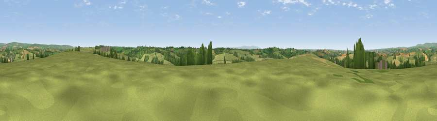

Viewpoint near Mariansleigh
#16096 in England · top 25% of its area beats it · near MariansleighWhere it is
The exact computed spot (SS 75475 21375). Click the marker for map links.
The view, rendered

A 360° render of this exact spot computed from the terrain model, tree cover and land cover — summer colours, afternoon light, calibrated against photographs of famous viewpoints. Real trees, hedges and buildings will differ in detail.
The panorama
Grey silhouette: terrain skyline in each direction (720 bearings, Earth curvature and refraction included). Dashed green: skyline with trees (+15 m) and buildings (+8 m) as obstacles. Blue strip: how far the ground is visible on each bearing.
Where the view opens
Wedge length = distance to the farthest visible ground on that bearing (vegetation-aware). Rings at 10, 25 and 50 km.
What fills the view
77% grassland · 11% cropland · 10% woodland · 1% built-up
Angular shares of the visible panorama (visual magnitude), not map area. Landscape diversity 0.32 (0–1 Shannon).
Key numbers
More beautiful places nearby
The staircase of upgrades: each row has a higher view potential than everything closer. Driving times are estimates from straight-line distance, calibrated against real road routing — check an actual route before setting out.
| Place | Direction | Drive | Score |
|---|---|---|---|
| Viewpoint near Mariansleigh | WNW · 2 km | ~5 min | 57.2 |
| Viewpoint near Rose Ash | ENE · 3 km | ~7 min | 58.4 |
| Viewpoint near Romansleigh | SW · 4 km | ~9 min | 59.5 |
| Viewpoint near Romansleigh | W · 4 km | ~9 min | 61.8 |
| Viewpoint near George Nympton | W · 6 km | ~13 min | 65.8 |
| Viewpoint near Stags Head | NW · 9 km | ~18 min | 68.1 |
| Viewpoint near Twitchen | N · 11 km | ~21 min | 69.1 |
| Yollacombe Hill | WNW · 14 km | ~25 min | 70.2 |
50.97828, -3.77518 · source: screening · position refined by local search. Computed location — check access rights before visiting.